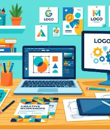
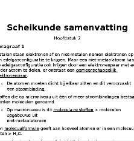

Design - foto's, posters, presentatie
Service voor scholieren, zonder Artificial Intelligence!
Hallo! Wij zijn Lammert, Jinwon, Dion en Sander uit 5 VWO. Voor een informatica project bouwen wij een systeem om jullie te voorzien van handige services. Wij kunnen bijvoorbeeld een samenvatting van je leertekst maken, posters voor jullie eigen projecten photoshoppen en uitlegvideo's maken voor leerlingen en docenten. En het belangrijkste is, een eindresultaat 100% zonder AI!

Design - foto's, posters, presentatie
Video editing - reclame video's, video's voor schoolopdrachten (niet voor een cijfer)

Leerstof uitleg - samenvattingen
Overige zaken
Nieuwe opdracht